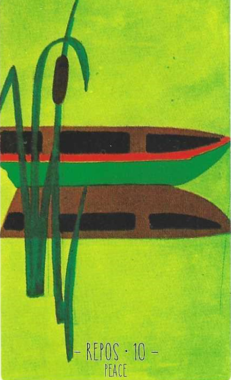

10
휴식(평화)
Peace중립

그림 읽기
평화로운 녹색 배경, 조용한 연못 위에 떠 있는 카누 한 척. 휴식·한가함·고요·전원생활을 상징합니다.
평화휴식힐링감정적 회복기소극적비활동적전원생활
핵심 내용
- 평온함·휴식·진정·휴양·휴가·침착함
- 잠시 생각할 시기를 갖거나 휴식기, 자신을 되돌아볼 시간이 필요
- 감정적 회복기, 소극적이고 비활동적, 무관심
- 헤어짐은 아니나 정리하는 시간이 필요(애정), 해외여행
- 퇴직·요양·게으름
주요 메시지
평화와 휴식 — 근심을 내려놓고 평화로운 상태에 도달하라는 메시지
일시적 중단 — 일상에서 벗어나 재충전하는 시간
실생활 적용
개인적 회복 — 스트레스에서 벗어나 정신적·육체적 건강 회복
일과 삶의 균형 — 바쁜 일정에서 벗어나 균형 재정립
학습 노트
질문의 맥락에 따라 부정적 의미도 될 수 있습니다.
조합 메모
휴식+우울(18) = 건강상의 이유로 휴직
휴식+물(16) = 해외여행·크루즈
16번+10번 = 여행·해외 체류 또는 충분한 휴식 필요
10번+18번 = 건강상 이유의 휴가·퇴직